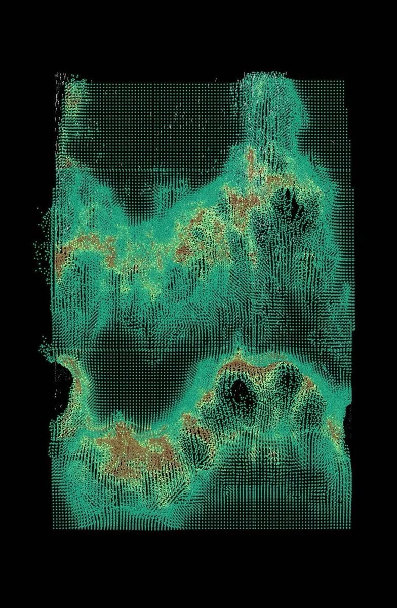
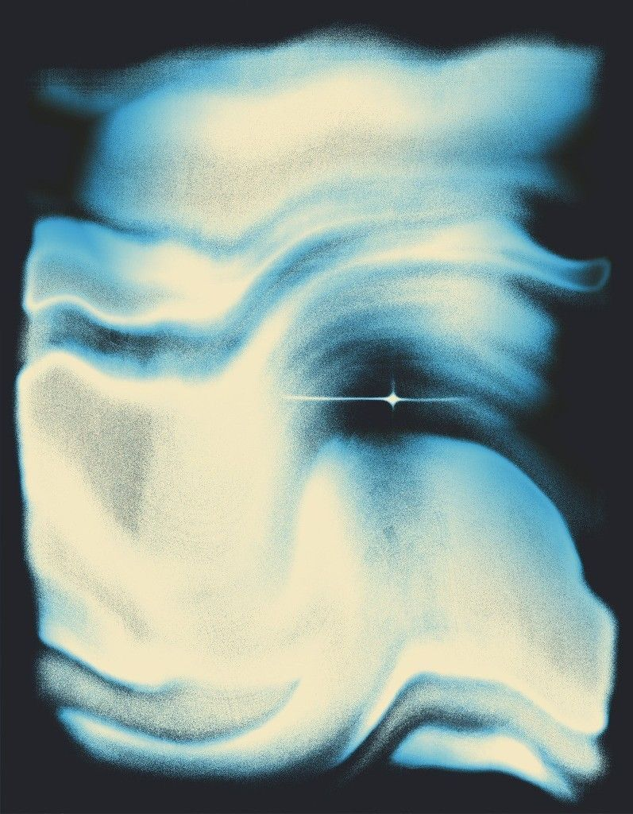

Projects
Things I've built, plus open source contributions along the way.
Repos

Vigia
A read-only service that proxies the Railway API, reshapes deployment data, and surfaces project health across a workspace in a clean dashboard. FastAPI backend, React + Vite frontend.

python-ci-pavedroad
A reusable, production-ready CI/CD pipeline template for Python projects: GitHub Actions, Docker, pytest, and ruff wired up so new services start with testing and deployment already solved.
Cairn
A Rust CLI for people with no free time. Capture ideas, use Claude to break them into 45-minute sessions with clear done-when criteria, and get learning tasks scheduled automatically when you're stuck instead of grinding on a blocker.
Open Source Contributions

Found shared mutable class-level context causing instance data leakage
All Confidence instances shared the same class-level context dict: setting context on one silently contaminated all others. Identified the root cause, proposed moving initialization to __init__, and flagged a secondary risk with a shared httpx.AsyncClient.

Fixed rate_limit returning a dict instead of a RateLimit object
The public Client.rate_limit property broke documented attribute access (.limit, .remaining, .reset). Identified the gap between the internal API layer and the public interface, wrote a failing test, and submitted the fix.
Added direct unit tests for the Paginator class
The Paginator class powers every .all() call in the library but had zero direct coverage. Added 7 isolated unit tests with unittest.mock covering multi-page traversal, cursor logic, parameter passing, empty responses, and mutation safety.